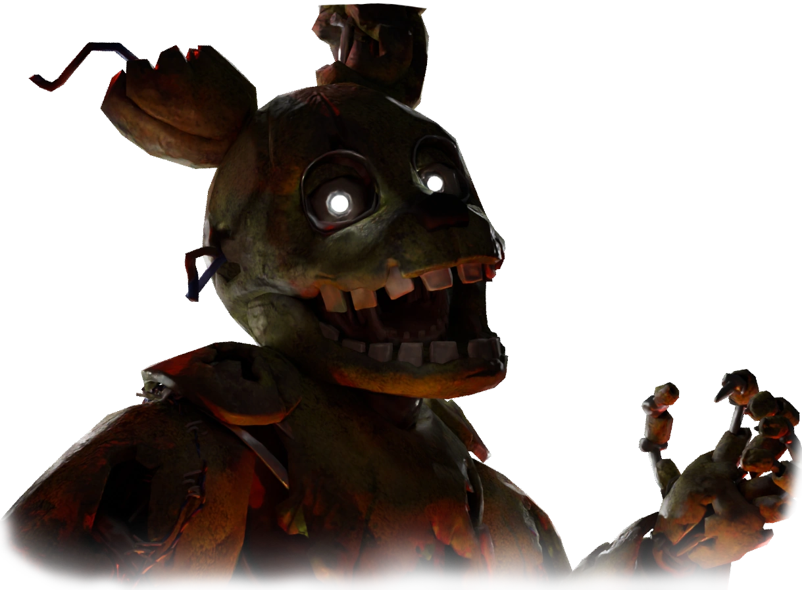
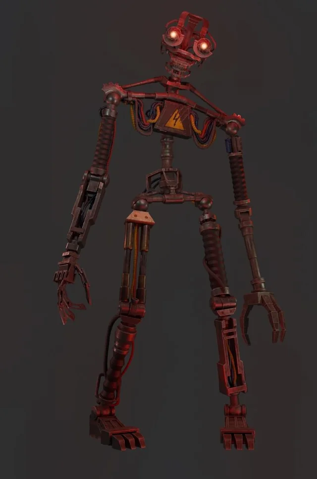
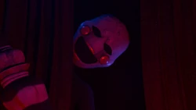
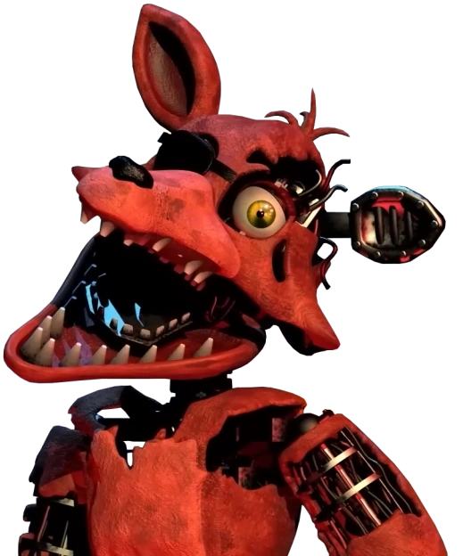

Springtrap

Аніматронік із душею Вільяма Афтона. Головний антагоніст FNAF 3.
Mimic

Новий антагоніст, який може копіювати поведінку інших.
Ennard

Злиття кількох аніматроніків, з'являється в Sister Location.
Puppet

Таємничий персонаж, який дає життя іншим аніматронікам.
Foxy

Швидкий і небезпечний пірат-аніматронік із першої частини.